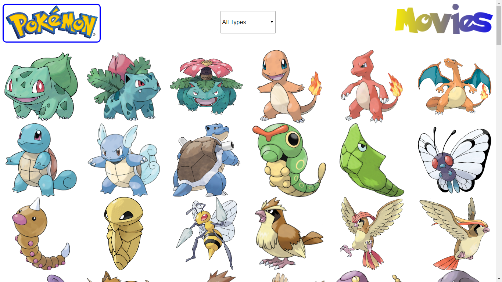

Project #1 - Personal Profile Page
In this assignment I modified and personalized basic HTML content and CSS...
In this assignment I modified and personalized basic HTML content and CSS styling. I worked with text and images, and with multiple connected web pages. This was a very basic, beginner-level assignment.
Show more(...)
Show less(^)
Project #2 - Responsive Layout
This assignment involved using a mobile-first approach to...
This assignment involved using a mobile-first approach to create a responsive design for a website based on mockups I was given. It introduced me to media queries and to responsive design, and continued to strengthen my HTML and CSS skills.
Show more(...)
Show less(^)
Project #3 - Online Registration Form
In this project I created an online registration form using HTML and...
In this project I created an online registration form using HTML and CSS. This introduced me to working with forms and tables in HTML, including features like HTML5 validation. I also practiced CSS and responsive design, and learned about some features like CSS transitions.
Show more(...)
Show less(^)
Project #4 - Interactive Photo Gallery
For this project I created an interactive photo gallery using jQuery...
For this project I created an interactive photo gallery using jQuery. The gallery is searchable and clicking on each image opens a lightbox overlay with a large version of the image and that image's description. Rather than intergrating already existing jQuery plugins, I wrote all of my own code.
Show more(...)
Show less(^)
Project #5 - CSS to Sass
This assignment had me take the code of project #2 and convert its CSS to Sass...
This assignment had me take the code of project #2 and convert its CSS to Sass, specifically SCSS. It taught me how to use many helpful Sass features, like extends, mixins, nesting, and variables, and also taught me to work with Sass in a modular way using partials and subfolders.
Show more(...)
Show less(^)
Project #6 - SVG Site Update
In this project I replaced raster images with SVGs and learned to...
In this project I replaced raster images with SVGs and learned to work with SVGs using HTML and CSS. I learned different ways to incorporate SVGs into my projects, how to style them with CSS, and how to modify them directly.
Show more(...)
Show less(^)
Project #7 - Interactive Video Player
This project had me create my own interactive video player using...
This project had me create my own interactive video player using HTML, CSS, and JavaScript, including building all of my own custom controls. I learned quite a lot about working with video in HTML5 and manipulating videos with JavaScript and jQuery. I also learned to work with .vtt cpation files and made a transcript that highlighted itself as the video played.
Show more(...)
Show less(^)
Project #8 - Accessibility Refactor
This assignment taught me about the value of accessibility and various...
This assignment taught me about the value of accessibility and various best practices for making my websites accessible. I learned about accessibility as it relates to document structure, images and alt text, links, tables, forms, color choices, aria landmark roles, and more. I also learned to use various accessibility tools, including accessibility dev tools in Chrome.
Show more(...)
Show less(^)
Project #9 - Web App Dashboard
In this project I made a front page for a social netowkring site...
In this project I made a front page for a social netowkring site, incporporating various features such as alert notifications, a messaging form, and various widgets. The assignment required me to make data-driven charts and style them, which I did using charts.js. I also learned to use local storage, and used it in this context to allow users to save their settings choices.
Show more(...)
Show less(^)
Project #10 - Public API Gallery
This assignment had me make a gallery using a public API from a pre-selected list...
This assignment had me make a gallery using a public API from a pre-selected list, pulling both images and text data from the API using AJAX. The gallery also featured a lightbox display for each item and a way to sort the items - in this case sorting Pokemon by type.
Show more(...)
Show less(^)
Project #11 - Performance Optimization
This project had me optimize a web site for performance with the goal of...
This project had me optimize a web site for performance with the goal of reducing the number and size of the files downloaded. I did this by combining and minifying CSS and JS files using gulp.js, using SVGs instead of raster images where appropriate, compressing images to reduce their size, and various other improvements.
Show more(...)
Show less(^)
Project #12 - Final Portfolio
In this project I created a draft of a portfolio of all my other projects, including...
In this project I created a draft of a portfolio of all my other projects, including paid freelance projects and my own bakery website, as well as all the projects for my front-end web development techdegree.
Show more(...)
Show less(^)
Air Filters Hawaii
Air Filters Hawaii was a Hawaii-based air filters company in need of a website update when...
Air Filters Hawaii was a Hawaii-based air filters company in need of a website update when the owner hired me to rework the site from the ground up. The overall look and feel (and assets) come from the old version, but I wrote all the code from this version from scratch.
Show more(...)
Show less(^)
Design Vision
Design Vision Architects hired me to remake their website...
Design Vision Architects hired me to remake their website last year after I met the owner through the Treehouse forums. Unlike the Air Filters Hawaii site, this one is completely redesigned. It is not yet completely finished, but the HTML and styling are almost entierly complete, leaving only some content to be added. I worked on this project in collaboration with my wife, who is also learning front-end web development.
Show more(...)
Show less(^)
Bancos Family Bakery
This is a website for the home bakery business that my wife and I...
This is a website for the home bakery business that my wife and I run together. The original version of this site was the first website I ever made, as I followed along with Treehouse's "How to Make a Website" course. My wife and I recently redesigned it together now that our web development and design skills have improved.
Show more(...)
Show less(^)